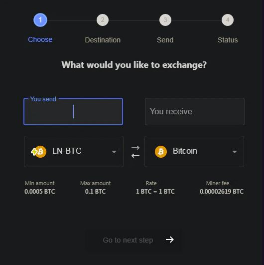
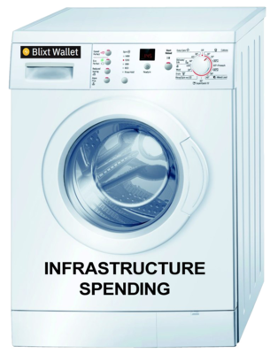
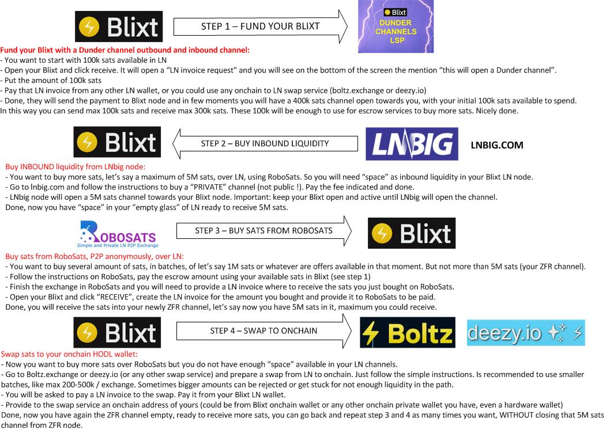

Blixt Wallet casos de uso
Blixt Wallet Video Demos
Aquí comenzamos con algunas demostraciones en video sobre cómo usar las características y funcionalidades de Blixt Wallet en situaciones reales. Creditos tambien a @colbitcoin y @Rager Major por estos excelentes videos de demostración.
Notas / consejos importantes
- Antes de comenzar a usar estos canales TOR y la aplicación Blixt no estaba abierta/sincronizada, intente esperar el icono de sincronización
en la parte superior para finalizar y verificar si todos los canales están activos en línea. Luego simplemente vaya y cree sus transacciones.
- Si los canales aún no están activos (consulte el icono de luz pequeña en el color del cajón superior), luego vaya y agregue nuevamente el URI
de la llave pública/ cebolla del par en los compañeros, en opciones de Blixt - Muestre pares. Puede intentar actualizar también esa lista,
si el chisme de Tor encontrará su compañero, los canales volverán a la vida.
Si no, simplemente agréguelo nuevamente y empujará los chismes para comunicarse.
- No solo salga ciegamente a hacer un TX inmediatamente después de abrir la aplicación Blixt.
Solo toma momentos para verificar si sus canales están activos, antes de obtener una ruta de error o fondos insuficientes.
- Abrir canales LN con Blixt tiene un costo, como cualquier otro canal de apertura de nodo LN. Esto tiene un nombre: "commit_fees"
que son como una reserva para cuando los canales están cerrados, para poder pagar las tarifas de los mineros.
Por lo tanto, tenga en cuenta que cuando deposite en su Blixt y abra los canales (no importa, use Dunder LSP o
canales de apertura de auto-piloto regular o manual), en su lista de canales verá la cantidad disponible que es un poco menor
que la cantidad total que usted Abra el canal. Es por eso que no se recomienda abrir pequeños canales pequeños como 20-50-100k sats.
- Además, cada LN TX puede tener una pequeña tarifa para la red. Esa no es una tarifa para Blixt, es un costo que hace que sus transacciones
sean seguras y aseguradas por la red. Pero son muy pequeños, a veces en msats.
- Al ser un nodo LN, no se recomienda usar la misma semilla en dos dispositivos diferentes. Se puede hacer este procedimiento solo en caso
de que se encuentre en un proceso de recuperación, cuando la billetera de la cadena generada a partir de la semilla comenzará a
sincronizar TXs y equilibrios anteriores y sin los canales LN. Entonces sí, verá la misma billetera en ambos dispositivos,
pero no en la LN. Y no intente restaurar en ambos los mismos canales LN. ¡Perderás fondos!
- Los canales de cierre llevan tiempo, hasta que se lanzan los fondos. Así es como funciona LN
(lea más en Lightning.how).
Entonces, en general, si tiene un cierre cooperativo (normal) tomará al menos 40 bloques hasta que los fondos se liberen en su
billetera en la cadena. Para los canales de fuerza cerrados, ese bloqueo es de 144 bloques o incluso más.
Así que sea paciente, los fondos estan seguros.
- Recomendamos mantener los canales en su Blixt, ya que sea posible. A través de un solo canal puede tener múltiples txs, entrando y saliendo.
Y cada vez que pueda rellenarlos/vaciarlos con servicios de intercambio. Es por eso que también se recomienda no tener
canales pequeños como 10-20-30-100K SAT.
Si ya abres algunos pequeños canales de Dunder, es bueno que, con el tiempo, los cierras y abres uno más grande.
- Se recomienda tener al menos 3 canales abiertos en su Blixt, con 3 pares diferentes, para la redundancia de caminos, pero no más de 5-6.
Tener más de 6 canales en su Blixt agregará más carga en el gráfico y el rendimiento, y no ayudará mucho.
Uno con el nodo Blixt (Dunder o regular): para una buena conexión con otros nodos grandes y otros usuarios de Blixt.
Uno con un nodo LSP de baja tarifa: para TXS más baratas y también elija uno que esté bien conectado, por ejemplo ZFR.
Uno con su propio nodo (si tiene): para otros movimientos de liquidez o privacidad, también como redundancia de los demas.
Es bueno también que active el MPP (pago de varias partes) en la configuración. Eso podría ayudar a usar múltiples canales en un TX.
Mantenga siempre estos pocos canales con suficiente liquidez. Puede rellenarlos en cualquier momento en función de su uso, con los swaps.
¿Cómo usar Dunder LSP para abrir canales y recibir fondos a través de LN?
Esta es una experiencia increíble y simple para recibir fondos directamente en su billetera de nodo Blixt recién abierta, sin necesidad de depositar fondos y abrir canales manualmente con nodos específicos.
Este procedimiento es proporcionado por el LSP (proveedor de servicios de liquidez), es una función de Blixt que permite a los usuarios obtener liquidez entrante/saliente instantánea abriendo un canal para ellos, desde el nodo Blixt LSP hacia su nodo móvil Blixt.
RECUERDE: LSP es solo un proveedor de liquidez, no un servidor de custodia, no un nodo de custodia, por lo que sus fondos siempre están en el canal de su dispositivo y usted es el único que puede controlarlos. Esto significa también que para estar operativo para recibir/enviar fondos, su aplicación Blixt debe estar en línea, como cualquier otro nodo. No es necesario estar todo el tiempo con la app abierta y conectada. La aplicación se sincroniza en segundo plano cuando su móvil tiene conexión a Internet. De todos modos, incluso si no se ha conectado durante un breve período de tiempo, una vez que abra Blixt, tardará unos momentos y sincronizará los filtros de neutrinos (SPV), luego su nodo volverá a estar en línea.
- Una vez que cree la billetera y guarde la semilla, vaya a la configuración de Blixt y active "Dunder LSP".
- Regrese a la pantalla principal de Blixt: haga clic en recibir, ingrese la cantidad, pero no más de 400k sats (hay una limitación por ahora).
- Creará una factura de LN para pagar desde otra billetera de LN.
- Una vez que se pague la factura de LN, el servicio Dunder LSP creará un canal con un máximo de 400 000 sats y transferirá los fondos que envió (200k sats, por ejemplo) al lado de su canal. Entonces tendrá un buen canal listo para enviar 200k sats y recibir 200k sats.
- Si va a tener otra recepción de pago en su Blixt, por menos de 200k sats, se utilizará el mismo canal. Si la cantidad será mayor, Dunder creará un nuevo canal (de un máximo de 400k sats) y así sucesivamente con todos sus pagos recibidos.
NOTA IMPORTANTE:
Acostúmbrate a hacer copias de seguridad de tus canales LN cada vez que abres/cierras un canal. Tarda exactamente unos segundos en hacerlo, incluso si por poco tiempo lo almacena en la memoria de su propio móvil. Más tarde puede moverlo a su lugar seguro de almacenamiento. También puede usar la copia de seguridad de Google Drive que se ofrece en Blixt. No seas perezoso e ignores esta simple regla, te salvará de muchos problemas más adelante.
¿Cómo usar el piloto automático para abrir canales LN?
La billetera Blixt tiene la función de piloto automático, pero se usa solo una vez, la primera vez que crea la billetera del nodo Blixt y deposita en el código QR en onchain que aparece por primera vez en la pantalla principal. Ese depósito abrirá un canal para ti con el nodo público de Blixt, con el monto que depositaste (menos las tarifas del minero y las reservas para el canal).
Por defecto la opción de piloto automático ya está activada, pero si no quieres usarla solo tienes que ir a Ajustes - "abrir canales automáticamente" y desactivar la casilla.
Esta función ya no se usa una vez que se abre el primer canal. Para que se abran los próximos canales tendrás que usar canales Dunder LSP y / o método estándar para abrir canales con cualquier otro nodo LN. Puedes comprobarlo en Página explorador de nodos LN Amboss.space y elija un nodo LN que desee conectar.
¿Cómo abro un canal con mi Umbrel/myNode/Raspiblitz/otro nodo?
Hay 2 opciones: abrir desde Blixt hacia tu nodo y también desde tu nodo home hacia tu nodo Blixt.
Pero antes mencionemos algunos aspectos a tener en cuenta:
- estos canales abiertos con su nodo de inicio, serán privados por defecto. Eso significa que no podrá enrutar otros txs a través de ellos. Y son privados por una razón: no se supone que un nodo móvil esté 100% en línea todo el tiempo, solo cuando el usuario necesita hacer una tx.
- por lo general, estos canales están abiertos usando red de Tor, debido al hecho de que la mayoría de los nodos domésticos (Umbrel, myNode, Raspiblitz) están habilitados para Tor de forma predeterminada. Así que cuando quieras abrir/usar estos canales, asegúrate de activar Tor en tu aplicación Blixt.
- estos canales son su primer salto en un pago, por lo que puede establecer fácilmente 0 tarifas totales y dejar que su nodo de inicio principal se ocupe de la mejor ruta de pago.
Abriendo un canal desde Blixt hacia tu nodo personal
- Activar Tor, en Blixt - Ajustes - Tor onion. La aplicación se reiniciará (si no, hágalo manualmente con cierre forzado).
- Vaya a su Umbrel / nodo de inicio y copie el URI de cebolla de su nodo de inicio o simplemente extraiga el código QR para el URI de cebolla. debe estar en este formato nodeID@onion-address:9735
- Vaya a Blixt - Configuración - Pares Lightning - agregar nuevo par.
- Escanee el código QR desde su Umbrel/nodo de inicio o pegue el URI de cebolla y su nodo de inicio se agregará como un par.
- Volver a la pantalla principal de Blixt - cajón superior izquierdo - Canales Lightning.
- Haga clic en el signo "+" para abrir un nuevo canal y pegue el URI de cebolla o escanee el código QR de su nodo Umbrel. Agregue la cantidad de sats para el canal, la tarifa y haga clic en abrir.
- Listo, el canal estará abierto y funcional después de 3 confirmaciones de bloque. ¡Feliz Lightning con tu propio compañero de nodo doméstico!
Abriendo un canal desde mi nodo home hacia el nodo móvil Blixt
NOTA IMPORTANTE: Hasta que se muestre la nueva implementación de Tor en Blixt (trabajo en progreso) y también se lance Tor v3 para Neutrino en código LND, considere esta opción como experimental.
- Activar Tor en Blixt - Ajustes - Tor onion. La aplicación se reiniciará (si no, hágalo manualmente con cierre forzado).
- Espere a que Blixt se abra en modo Tor y sincronice los últimos bloques (vea el ícono de sincronización en la parte superior)
- Vaya a la configuración de Blixt: vea "Mostrar el servicio de onion Tor", cópielo, es su URI de nodo Blixt. Es bueno tenerlo guardado también en su administrador de contraseñas, para su uso posterior. ¡Mantenga su aplicación Blixt activa en línea durante todo este proceso!
- Vaya a su aplicación Umbrel RTL o Thunderhub (preferiblemente), agregue como par y pegue su URI de onion Blixt
- Vaya a su panel de control de nodos de Umbrel o RTL/Thunderhub - abra el canal y seleccione un par conocido de la lista buscando su ID de nodo de Blixt
- Ingrese la cantidad de sats para el canal, tarifas, haga clic en abrir. Espera 3 confirmaciones de bloque y tienes un nuevo canal con tu "mini nodo" Blixt.
- Opcional, más tarde, cuando esté listo, puede enviar fondos usando la función de envío de clave, en un lado u otro. Blixt también es compatible con el envío de claves, al igual que Thunderhub.
- Lea más sobre la gestión de canales con Dunder aquí
¿Cómo recargo un canal LN existente desde una dirección onchain?
Además de la apertura regular de canales LN en Blixt, a veces los usuarios solo quieren recargar
los canales existentes desde la dirección en cadena. Por el momento, Blixt no tiene una forma interna de intercambiar
fondos en cadena hacia/desde LN, pero se considera para próximos lanzamientos.
Entonces, ¿cómo podemos hacerlo?
Escenario de caso de uso:
- ya tienes 2-3-4 canales LN en Blixt
- esos canales están casi vacíos y necesita más liquidez en LN para realizar algunos pagos
- no desea cerrar los canales existentes y abrir más
- tiene fondos en una dirección onchain o simplemente compra en un exchange, una pequeña cantidad y desea retirarla en LN
Pasos a seguir:
- Entra en cualquier servicio de swap como
Boltz,
Boltz Eldamar,
DiamondHands,
FixedFloat,
Deezy.io,
Submarineswaps,
myLoop telegram bot,
iPayBlue,
CoinOS or
RoboSats (accesible a través del navegador Blixt WebLN o la dirección Tor onion)
y seleccione cambiar en cadena a LN
- Ingrese el monto, pague desde su dirección onchain (podría ser incluso desde la misma billetera Blixt onchain o cualquier otra que tenga)
- Proporcione la factura LN de su monedero Blixt como destino
¡Hecho! Ahora tienes tus sats directamente en tus canales Blixt LN. Esta es también una buena forma de privacidad.
NOTA: también puede hacer lo contrario, sacando sats de los canales LN a cualquier dirección onchain, sin cerrar los canales.
En este caso, también puede usar Deezy.io swap (este es solo LN para onchain)
Cómo usar Blixt con Tor - clearnet - VPN
Muchos usuarios quieren usar Blixt Wallet como una billetera de nodo de "privacidad". Y respetamos y entendemos este especto.
Pero en algunas situaciones específicas, la red Tor no es tan confiable para tales cosas, ya que un nodo LN debe estar 100% bien conectado, para sincronizar la red gráfica y comunicarse bien con sus pares.
Pero veamos cómo Blixt está haciendo las comunicaciones:
- Blixt sincronizará los bloques a través de Neutrino (BIP157) con su nodo predeterminado (node.blixtwallet.com) o con el nodo del usuario.
- Blixt, por el momento no pudo usar un URI de cebolla para esa sincronización de Neutrino. Se espera un nuevo lanzamiento de LND para soportar esa opción.
- El tráfico en cadena se realizará a través del nodo Blixt, por lo que su IP solo será conocida por el servidor Blixt.
- El tráfico de LN, si tiene canales solo con el nodo Blixt, será solo a través del nodo Blixt.
- Si tiene canales con su propio nodo, solo su nodo conocerá su IP/ID de nodo de Blixt.
- Si tiene canales con varios nodos, "verán" su IP de su nodo Blixt o dirección de cebolla Tor.
Ahora, analicemos algunas situaciones de uso con diferentes redes:
- Desea privacidad total de Tor: usará Blixt solo en Tor y nunca cambiará a clearnet. Canales abiertos con nodos Tor, incluso con nodo Blixt. De esta forma los servidores de Blixt nunca conocerán tu IP real. Pero tenga en cuenta: las conexiones Tor están fallando mucho hoy en día, por lo que no son tan fiables.
- Quiere privacidad pero no con Tor (no es confiable); puede usar Blixt detrás de una VPN, que reenviará todo el tráfico realizado en su dispositivo a través de una IP dedicada (que no es suya). Un caso de uso simple podría ser LNVPN.net. Las conexiones VPN podrían ser mucho más rápidas y confiables que Tor.
- El mejor escenario: conéctese a su propio nodo doméstico con Neutrino a través de clearnet/IP. De todos modos, solo usted sabe / tiene esa información. Abra canales solo con su propio nodo o nodos en los que confíe. Sobre clearnet, no importa. Todo el tráfico de LN se realizará de todos modos desde ese nodo donde está conectado y reenviará todos sus pagos de LN para su Blixt, siendo el único primer salto. Después, debido al enrutamiento onion integrado en LN, NADIE sabe de donde viene y a donde va ese tx. Como se explica en esta guía.
- Si solo es un usuario habitual que paga algunas cervezas a través de LN, no hay tanto problema en usar Blixt a través de clearnet. El único "eslabón débil" será el servidor Blixt que registrará algunas de sus direcciones IP desde donde conecta su Blixt. Eso es todo, nada más. Todo el resto es desconocido.
Así que elige por ti mismo, en qué situación te encuentras y las ventajas y desventajas que estás dispuesto a tener para cada método.
"Mi Blixt se atasca al iniciar, cuando tengo Tor activado. ¿Qué puedo hacer?".
Sí, a veces, debido a una mala conexión, un mal proveedor de servicios de Internet o un mal impulso de Tor, el servicio puede atascarse.
Primer paso: fuerce el cierre de la aplicación Blixt, de modo que se eliminen todos los intentos restantes de conexión.
Segundo paso: cambie la conexión a Internet de su dispositivo, de 4G a Wifi o viceversa, busque otro punto móvil para obtener otra IP.
Si tiene alguna otra aplicación que use Tor / Orbot, debe cerrar esa conexión. A veces, las conexiones Tor simultáneas pueden mezclarse.
Si también usa una VPN, cierre esa conexión primero. No es necesario cuando te conectas a través de Tor.
Usar Blixt Wallet como pequeño comerciante: pasos simples
Como comerciante, necesitará más liquidez entrante, recibiendo más pagos que enviándolos. Necesitas tener "más espacio" para recibir sats.
Con Blixt, deberá realizar algunos pasos de preparación para obtener esa liquidez entrante.
La idea es tener un montón de canales suficientemente grandes (dependiendo de la cantidad de tráfico entrante), recibir pagos en estos canales grandes. y al final del día o de la semana, cuando estos canales están llenos, transfiere como el 90% del saldo a una dirección en cadena, utilizando un servicio de intercambio submarino (ver una guía detallada sobre swaps aquí).
Por el momento, Blixt no ofrece un servicio de intercambio "en la aplicación", pero se tiene en cuenta para futuros desarrollos.
Escenario de caso de uso y pasos a seguir:
- Configure su billetera Blixt: genere una nueva billetera, guarde la semilla, configure sus ajustes personales, anote su ID de nodo, etc.
- Abre un canal de Dunder. Vaya a la configuración y active la opción "Habilitar Dunder LSP". Luego vaya a la pantalla principal y presione el botón "Recibir". Haga una pequeña factura como 20k sats. Pague esa factura desde otra billetera LN o incluso podría ser su primer cliente que le pague en sats. El servidor Dunder Blixt tomará ese pago y lo convertirá en un canal LN hacia su nodo móvil Blixt, aumentando la cantidad que usted (o su cliente) pagó y el resto hasta 400k sats será como espacio de liquidez entrante en ese nuevo canal (también conocido como espacio vacío para recibir más). Así que ahora estás listo para recibir más 380k sats en ese canal.
- Abra más canales entrantes. Puede usar la opción "Servicios de canal entrante" desde la configuración de la aplicación. Simplemente siga las instrucciones que se muestran. Prácticamente comprará un canal entrante proporcionando su ID de nodo Blixt.
- Si tiene un amigo o cliente con un nodo (y todavía no tiene uno), también podría abrir un canal hacia usted y proporcionarle liquidez entrante.
- Más proveedores de liquidez aquí: LNRouter Ads
o ZeroFeeRouting Node
- Ok, ahora que tiene suficiente liquidez entrante, comience a recibir pagos con su Blixt. Hasta llenar todo el espacio de los canales.
- Recorra estos satélites en una dirección en cadena. Entonces, prácticamente necesita enviar estos satélites a un servicio de intercambio. Es mejor dividir en txs más pequeños o activar MPP ("Habilitar pago de rutas múltiples") en la configuración de la aplicación, para que sus tx recortados encuentren una mejor ruta para grandes cantidades.
- Servicios de swaps disponibles para hacer este paso - ver esta sección
- Proporcióneles una de sus direcciones de ahorros en cadena/HODL y pase de su billetera Blixt a su billetera HODL.
LISTO!
Ahora tiene más "espacio" para recibir más pagos. Happy Lightning!
¿Cómo usar Blixt como compañero de tu nodo doméstico?
Al ser una billetera móvil, Blixt Wallet tiene la ventaja de ser una billetera de gastos y también una rampa / puerta para su "máquina de estrategia de gastos de infraestructura".
Su nodo de inicio (Umbrel, myNode, RaspiBlitz, etc.) será el "banco comercial", que administrará sus mayores cantidades de fondos, cuidando su enrutamiento, tarifas, privacidad, liquidez, etc.
Entre tu Blixt móvil y el nodo de casa tendrás canales privados, que solo tú conoces, no son visibles en el gráfico público de LN ni son conocidos por otros. Este aspecto le brindará más privacidad para sus txs regulares, pero también una buena vía de tráfico, si desea mover fondos de fuentes KYC, a través de intercambios, a sus billeteras en cadena HODL.
Consideraciones:
- Ya tienes un canal entre tu Blixt y el nodo de inicio. Mejor lo suficientemente grande como para manejar transacciones más grandes y numerosas. Ejemplo 1-3M canal de sats.
- Ya tiene al menos 1-2 incluso 3 otros canales con otros nodos (nodo Blixt, ZeroFeeRouting o muchos otros buenos). Aquí hay una lista seleccionada de buenos nodos para comenzar.
- Opcional, puede configurar en su aplicación de billetera Blixt, la opción de usar MPP (pago de partes múltiples). Use esta opción cuando tenga un pago mayor
- Tiene suficiente liquidez en su lado Blixt del canal con su nodo para cubrir sus pagos regulares. Siempre puede hacer retroceder fondos mediante el envío de claves desde su nodo de inicio a su nodo de billetera Blixt.
- Ha establecido en su nodo de inicio 0/0 tarifas para el canal que tiene con su Blixt Wallet y también 2-3 otros buenos pares, a donde puede impulsar el flujo de txs desde su Blixt.
Pasos a seguir:
- Simplemente pague su factura regular de LN, usando Blixt. Esos pagos se enrutarán primero a su nodo de origen y desde allí los próximos saltos de acuerdo con la liquidez de su nodo y sus pares.
- Si agota su liquidez de la billetera Blixt, tiene dos opciones:
- empuje hacia atrás con keyend desde su nodo, a través del canal común (si tiene suficiente liquidez)
- o pague a usted mismo utilizando una factura LN de su Blixt. Su nodo pagará esa factura a través de otros pares a su billetera Blixt.
- Si tiene que enviar un pago de más de 100k sats, le sugiero que use la opción MPP (pago de varias partes) (ver en la configuración). Esto ayudará a utilizar mejor la liquidez que tienes en muchos canales y también aumentará la privacidad. Cuando use esta opción, tenga en cuenta que podría tomar más tiempo hasta que se complete, debido a las múltiples rutas que puede tomar. También podría implicar más tarifas, dependiendo de la ruta de pago que se tome.
¿Cómo envío sats a direcciones onchain?
Blixt Wallet también es un nodo LN. Y para eso se hace una clara distinción entre "monedero onchain" y "monedero LN". Otras aplicaciones de monederos no utilizan esta distinción y los usuarios realmente no entienden lo que sucede "detrás de escena". Blixt es más transparente en este asunto y utiliza como "monedero onchain" para abrir/cerrar canales y concentrarse más en la usabilidad en Lightning Network, más como un nodo móvil privado para gastar.
Sin embargo, los usuarios aún pueden realizar transacciones en onchain en cualquier momento, como con cualquier otro monedero onchain regular. Blixt tiene el "monedero onchain" en una sección separada en la aplicación, más como una "mini-bóveda", desde dos perspectivas:
- Separar los saldos de las billeteras onchain y LN hace que sea más privado de los "ojos externos" que se cuelan en la pantalla de tu móvil. Blixt muestra en la pantalla principal (que lo usa más para pagos) solo el saldo de la billetera LN. Eso hace que ocultar el resto de sus saldos en cadena para que no sean visibles y le ofrece una mejor privacidad pública.
- Tener 2 tipos de saldos también lo hace más consciente de sus hábitos de gasto, lentamente se volvió más hodler, porque ve que su saldo de LN disminuye y también disminuirá sus hábitos de gasto. Esto es bueno en general, para acumular más sats. ¡Blixt se preocupa por sus usuarios!
Entonces, si solo desea o realmente necesita hacer un pago en cadena, simplemente vaya al cajón superior - monedero onchain y allí tendrá acceso a todas las funcionalidades de un monedero onchain normal.
Por otro lado, si tiene sats solo en el monedero LN y desea / necesita enviar a una dirección onchain, esta operación requiere algunos pasos para realizar.
Tenemos usuarios que reciben más sats en LN de los que gastan y sus canales de LN se llenan rápidamente (comerciantes, usuarios que compran mucho a través de intercambios de LN y simplemente "apiladores" que simplemente obtienen más sats de los que gastan).
Blixt, no tiene (todavía) un servicio de intercambio interno LN --> onchain, tiene solo onchain --> LN (apertura de canales LN, con Dunder LSP o manualmente).
Hay pocas opciones para esta operación LN --> onchain:
-
Cerrar los canales de LN - podría tomar más tiempo y tarifas y siempre vuelve al mismo monedero onchain Blixt, no externa. Entonces, si desea continuar recibiendo sats en LN, deberá abrir nuevos canales nuevamente y esto implica costos adicionales en las tarifas.
Esta opción es simple, simplemente vaya al cajón superior izquierdo, abra Canales Lightning, seleccione un canal que desee cerrar y haga clic en "Cerrar". Deberá esperar hasta que se complete el cierre y al menos 3-4 confirmaciones para la transacción onchain y sus fondos estarán listos en su monedero onchain Blixt (consulte el cajón superior - Monedero onchain).
-
Utilice un servicio de intercambio externo mencionados en esta sección

Para usar un servicio de intercambio también es bastante simple, en pocos pasos:
- Vaya a uno de esos sitios web de servicios indicados.
- Seleccione L-BTC (Lightning sats) a BTC.
- Pon la cantidad de sats que quieres intercambiar. No use todos sus sats a la vez, deje algunos para tarifas posibles. Si usa una cantidad superior a 50K sats, sugiero usar la opción MPP (ver en la configuración de Blixt). MPP = pago de varias partes. Eso hará dividir su alto pago en piezas más pequeñas y es más probable que el pago sea rápido, más barato y sea recibido en buenas condiciones por el intercambio.
- Vaya al siguiente paso, donde el servicio de intercambio le pedirá que pegue una dirección BTC onchain. Podría ser cualquiera de cualquiera de sus billeteras en la cadena, que no sea necesariamente de Blixt. Por ejemplo, si usted es un comerciante y desea intercambiar todo lo que la mayoría de sus sats se vuelven a rodear ese día, en un monedero HODL, proporcione una dirección de esa monedero onchain.
- El siguiente paso es dónde se le solicitará el servicio de intercambio con una factura de LN. Escanee el QR con su Blixt Wallet y pague la factura.
- Una vez pagado, recibirá una confirmación y puede ver la transacción en la Mempool y su monedero también la mostrará, una vez que los mineros la incluirán en un bloque.
-
Uso del servicio de intercambio integrado del monedero Electrum. Este es un caso particular pero funciona bastante bien, usando canales trampoline y swap integrado LN <-> onchain.
Esta opción es buena si desea mantener más control del proceso y no desea involucrarse con servicios de terceros como los del punto 2. La transacción en LN desde su monedero Blixt a su propio monedero Electrum es práctico totalmente una transacción privada.
Una vez que lo reciba en Electrum LN, tiene un botón simple en la parte superior para hacer el swap a dirección onchain y los fondos se reciben en la dirección Electrum onchain.
Desarrollo futuro con la versión de escritorio de Blixt Wallet, tal vez tendrá swaps integrados como Electrum, pero hasta entonces, puede usar Electrum.
¡HECHO! Simplemente cambias tus sats de LN a una dirección onchain. ¡Continúa, ahora puede recibir más sats en sus canales LN de Blixt!
¿Cómo usar Blixt como "Máquina de Gastos en Infraestructura" (ISM)?
La "Máquina de gastos de infraestructura" es el método utilizado para comprar bitcoins de los intercambios KYC y moverlos a sus billeteras HODL en cadena, pasando por una serie de "preparaciones" de tal manera que se rompen los enlaces a su identidad KYC, para una mejor privacidad.
Entre tu Blixt móvil y el nodo de casa tendrás canales privados, que solo tú conoces, no son visibles en el gráfico público de LN ni son conocidos por otros. Este aspecto le brindará más privacidad para sus txs regulares, pero también una buena vía de tráfico, si desea mover fondos de fuentes KYC, a través de exchanges, a sus billeteras en cadena HODL.

Consideraciones:
- Ya tienes un canal entre tu Blixt y el nodo de inicio. Mejor lo suficientemente grande como para manejar transacciones más grandes y numerosas. Ejemplo un canale de 2-5M sats.
- Use este escenario cuando las tarifas en cadena sean bajas y mempool esté casi vacío, para ahorrar tiempo y tarifas. Comprueba primero Mempool para ver el estado.
- Ya tiene una "cartera de caché" en cadena para ser la rampa intermediaria para este procedimiento. Puede usar la billetera en cadena de su nodo de inicio, pero es mejor una billetera de escritorio Electrum/Sparrow (para una mejor administración de tarifas, UTXO, monedas, etc.). Esta "cartera de caché" es importante.
- NO se retira directamente de un intercambio al servicio de intercambio. Podría tener fondos bloqueados y/o perdidos si hace eso. Por lo general, los intercambios utilizan un retraso en el retiro de fondos, en especial para evitar estos casos. Así que retira primero a tu "cartera de caché", por seguridad.
- Servicios de intercambio que podrías usar: ver esta sección
Pasos a seguir:
- Compre BTC en cualquier intercambio con el que se sienta cómodo. Si puede, elija uno con menos KYC o incluso ninguno. Ver KYCnot.me
- Retire el BTC inmediatamente a su "cartera de caché" en cadena, con una selección de tarifa baja si puede. Espere 6 confirmaciones, comprobando Mempool (preferiblemente usando Tor o VPN, no su IP real, o use la aplicación mempool desde su nodo de inicio para verificar directamente en su copia local de blockchain).
- Envíe BTC a uno o más servicios de intercambio mencionados anteriormente. Puede dividir en cantidades más pequeñas, si compró una cantidad mayor. Asegúrese de elegir un buen momento con tarifas bajas y un mempool casi vacío, de lo contrario, si tiene prisa, tendrá que pagar tarifas más altas. El servicio de intercambio tiene un tiempo limitado para esperar a que se envíe ese tx en cadena, generalmente 30 minutos hasta que se realiza la primera confirmación.
- Proporcione una factura de LN por el monto indicado en el servicio de intercambio, desde su billetera Blixt. Mantenga su Blixt activo y en línea durante este proceso.
- Una vez que reciba los fondos del intercambio, puede usar la opción de envío de claves de su Blixt o una factura LN regular desde su nodo de inicio para mover los fondos de Blixt a su nodo de inicio. Recuerda: esa transacción será privada, a través de tu canal privado entre tu Blixt y tu nodo home.
- En este paso, puede usar la función interna de "bucle de salida" de las aplicaciones de administración de nodos RTL o Thunderhub para mover fondos de los canales LN a una dirección externa en cadena. O simplemente guárdelos para usarlos en LN, más tarde cuando sea necesario. También podría usar nuevamente los servicios de intercambio externos mencionados anteriormente, pero esta vez al revés, enviando a través de LN y recibiendo en cadena, a la dirección BTC deseada de su billetera HODL.
Aquí hay un esquema simple para hacer intercambios con Blixt, como ejemplo para usar:

¿Cómo consolidar fondos de una vieja billetera Blixt?
Consideremos este escenario de caso de uso:
- tiene una billetera Blixt vieja y el dispositivo está roto, ya no puede ejecutar Blixt,
o simplemente desea limpiar la instancia anterior y migrar a un nuevo ID de nodo Blixt y nuevos UTXO.
- tiene la semilla de respaldo y todos los canales de LN están cerrados, todos los fondos ya están en UTXO de billetera onchain.
- ya tiene un nuevo dispositivo, listo con una nueva instancia de Blixt. No es necesario tener fondos en él, simplemente vacío.
En este caso, para tener una transición fluida al nuevo dispositivo y también consolidar todos esos UTXO,
como resultado del cierre de muchos canales, recomendamos el siguiente procedimiento:
- Importe su antigua semilla en Bluewallet (también podría estar en Sparrow, pero es un procedimiento más largo y complicado), como cualquier otra billetera en cadena.
- Utilice cualquier servicio de intercambio en cadena para LN ver esta sección
- Vaya a su nuevo Blixt, en la configuración, active "usar canales Dunder". Mantenga Blixt activo para mantenerse sincronizado.
- Envíe los fondos de Bluewallet onchain (sus antiguos fondos de Blixt) a cualquiera de estos servicios de intercambio.
- Cuando se le solicite que proporcione una factura de LN desde la que se intercambiarán los fondos, abra el nuevo Blixt y haga clic en "Recibir".
En este momento verá un mensaje que dice "Esta factura abrirá un nuevo canal de Dunder".
- Haga clic en crear factura y mantenga Blixt activo.
- Copie el código de la factura y péguelo en el cuadro de intercambio, que lo está esperando y haga clic en "Enviar/Intercambiar".
Los fondos se enviarán a Blixt Dunder Server y en unos momentos se abrirá un nuevo canal hacia su Blixt.
- Una vez pagada la factura, vaya a su Blixt - cajón superior - canales Lightning.
Verás que tras la 1era confirmación aparecerá allí el nuevo canal, en estado "pendiente de apertura".
- Solo espera a que se confirme por completo (3 confirmaciones en cadena) y estarás listo para usarlo entonces.
Sus fondos antiguos se transfieren a un nuevo ID de nodo, lo que agrega más anonimato a sus nuevos UTXO.
RECORDATORIO, algunos aspectos importantes:
- Si la cantidad total de fondos que desea transferir es superior a 400k sats (el límite máximo para abrir canales Dunder), tiene estas opciones:
- divida la transferencia de intercambio en varias partes más pequeñas, por debajo de 400k sats y abra varios canales de Dunder (no muy recomendable)
- utilice un LSP de entrada para comprar un canal de entrada con mayor capacidad. Vaya a Configuración de Blixt - Servicios de canal de entrada.
Allí encontrará algunos proveedores sugeridos por Blixt (LNbig y Bitrefill). Podrías usar cualquier otro.
Tenga en cuenta que debe especificar que necesita un canal privado. Compre un canal con suficiente liquidez mayor que la cantidad total de fondos que desea mover.
Pague el costo de ese canal entrante, desde otra billetera LN donde tenga sats en LN. O desde onchain si el LSP lo acepta.
- Si la cantidad total de fondos que desea transferir es inferior a 400k sats, puede usar el canal Dunder directamente.
Mini guía rápida de liquidez para Blixt Node
Escenario de caso de uso:
"Tengo 6 canales de Blixt Dunder abiertos, con un total de 400k sats de mi lado. A veces tengo fallas en las rutas y no puedo hacer pagos.
Recibí varios pedidos de Robosats y ahora todos los sats se encuentran en 6 canales".
¿Qué puedo hacer?
Para tener una buena liquidez, no solo por ahora, sino también para uso futuro, debe tener un máximo de 3-4 canales, pero con diferentes pares, no solo uno.
Entonces, consideremos que durante una semana, necesita un máximo de 2M sats PARA RECIBIR, aproximadamente. La cantidad se puede ajustar según las necesidades y hábitos de cada usuario.
Consideremos también que durante la misma semana, realizará menos pagos, digamos aproximadamente 300k sats.
Así cada semana se quedará con un saldo de su lado de 1,7M sats, aproximadamente.
En lugar de tener 6 canales, cada uno con una capacidad máxima de 400k sats (un total de 2,4 M sats), es mejor tener 3 canales, cada uno de 1M sats.
Ajústelo para sus necesidades entrantes.
Cierre todos esos 6 canales, son demasiado pequeños para la necesidad regular de entrada de todos modos.
Los canales Dunder son principalmente para usuarios nuevos, para una fácil incorporación con la apertura rápida de un canal LN.
No son de uso regular para abrir un canal cada vez que tenga que recibir un pago. Eso es costoso.
ESCENARIO A
Después de que todos estén cerrados y los fondos recuperados en cadena, abra 3 canales grandes, cada uno de 1M sats:
- 1 con nodo Blixt
- 1 con su propio nodo (si tiene uno) o un nodo amigo (de confianza). Si no quieres/tienes tal amigo,
use solo otro nodo bien conocido
- 1 con cualquier otro nodo bueno, bien conectado. Vea aquí algunos pares recomendados
Listo. Ahora tienes 3M sats en 3 canales. Toda la liquidez saliente. Así que hagamos un poco de espacio.
Use cualquiera de los swaps convenientes (Deezy, Boltz, FixedFloat, Robosats, etc.) y canjee, al menos, el 50 % de toda su liquidez saliente.
Puede hacerlo en 3 lotes (recomendado para montos más pequeños) o todos a la vez (podría fallar debido a otras rutas de baja liquidez de los nodos de enrutamiento). Puedes probar ambos casos.
Si necesita más liquidez entrante, intercambie más sats, a cualquier otra dirección en cadena, utilizando los intercambios.
Pero no cierres esos canales. No todavía.
Un canal debe cerrarse solo cuando no tiene suficiente liquidez o el par no responde o está desconectado demasiado tiempo.
Así que ahora tiene suficiente liquidez entrante para comprar más de Robosats.
Compre más, intercambie, realice pagos, feliz Lightning. Repetir. Nunca cierres esos canales. Úsalos de un lado a otro.
ESCENARIO B
Mantenga un canal abierto, uno en el que tenga suficientes sats para comprar un canal entrante de cualquier LSP (LNBig, Bitrefill, etc.). El resto, ciérralos.
Una vez que estén cerrados, compre 2 grandes canales entrantes de esos LSP. Cada uno de 1-2M sats, suficiente para manejar una gran cantidad de pagos.
Cuando los tengas listos, puedes ir y comprar más sats de Robosats.
Cambia a onchain usando los servicios de intercambio mencionados anteriormente y sé feliz, hiciste más espacio para comprar más.
O simplemente use esos sats para realizar pagos a través de LN.
Nunca cierres esos 2 grandes canales. Comprar - intercambiar - gastar - comprar más.
Cuando tenga 2 o más canales diferentes con diferentes pares, sí se recomienda usar el MPP (pago de múltiples rutas).
Pero cuando tiene solo un canal o múltiples canales con el mismo par, el MPP no funciona y podría terminar en "ruta fallida".
Por lo tanto, siempre se recomienda tener canales con diferentes pares / nodos y lo suficientemente grandes como para manejar sus transacciones regulares en un cierto período de tiempo.